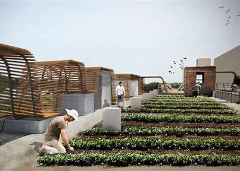
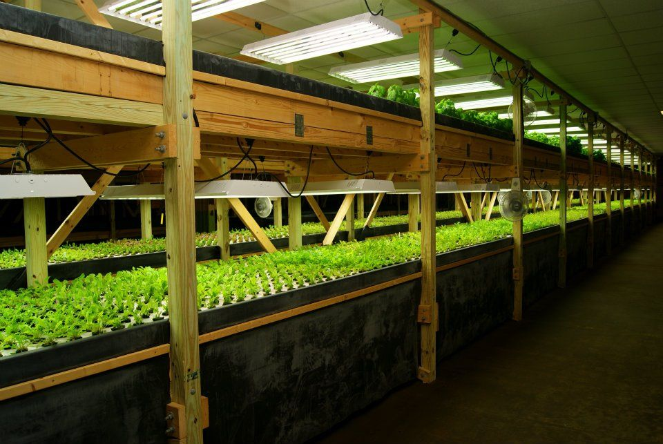
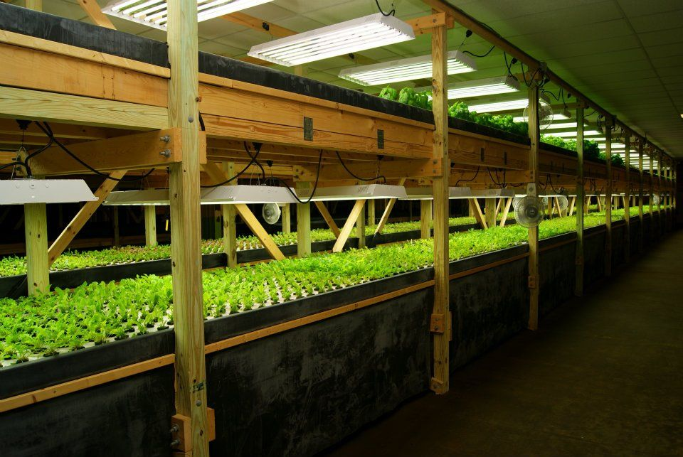
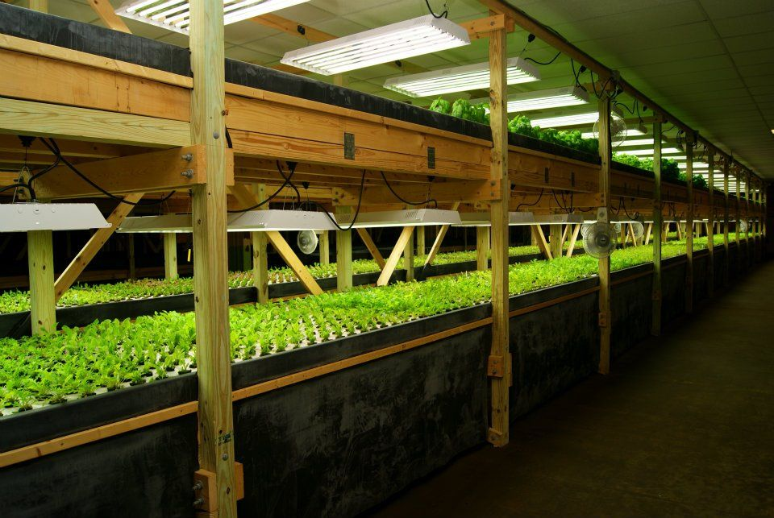

Welcome to Community Urban Farming
Urban Farming is more than just a hobby; it's a boon for society, contributing not only to social well-being but also economic and environmental benefits. Our mission is to connect individuals with a passion for tending to agricultural resources and helping each other learn and apply modern plant cultivation techniques. This effort not only reduces pollution in urban areas but also creates a soothing and refreshing environment.
Explore Urban Farming

 

